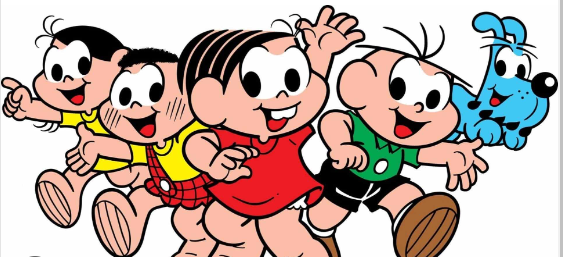

Turma da Monica
Mauricio Araújo de Sousa (Portuguese: born October 27, 1935) is a Brazilian cartoonist and businessman who has created over 200 characters for his popular series of children's comic books named "Turma da Mônica" or "Monica's Gang

At 17 years of age, he worked for a daily newspaper called Folha da Manhã as a crime reporter. In 1959, Sousa quit that job and began his comic book career, and created Monica's Gang. Sousa's characters were inspired by children he knew from his childhood and by his own children. His later style is slightly reminiscent of that of Osamu Tezuka, a famous Japanese manga artist.